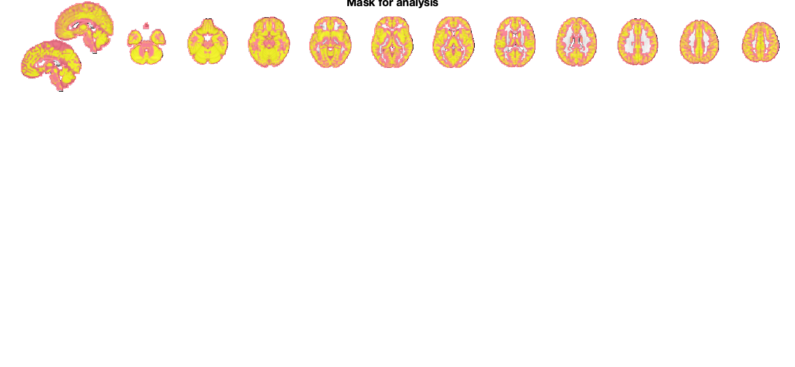
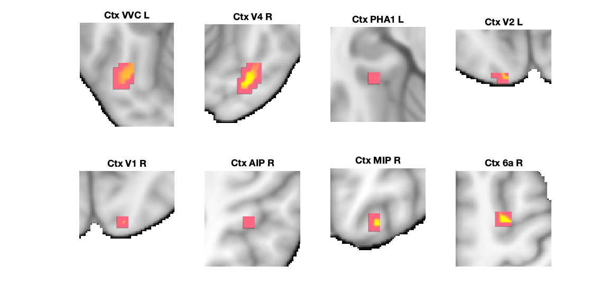
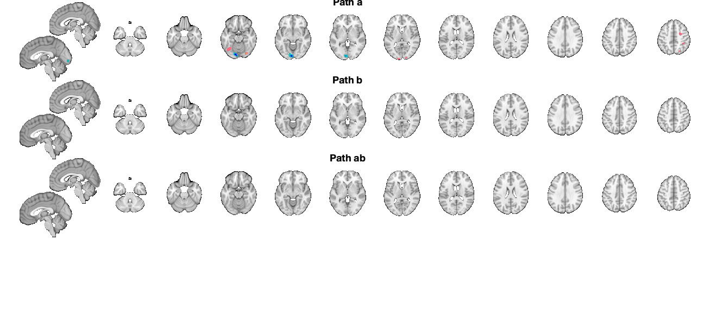
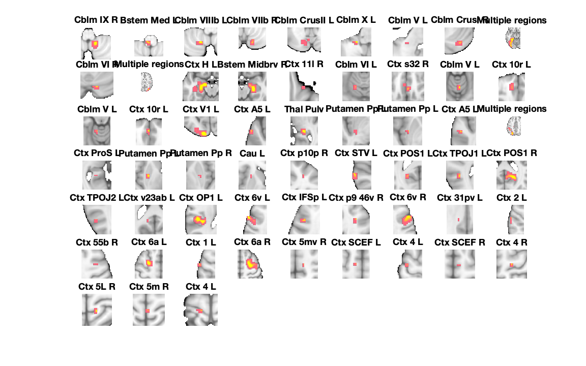
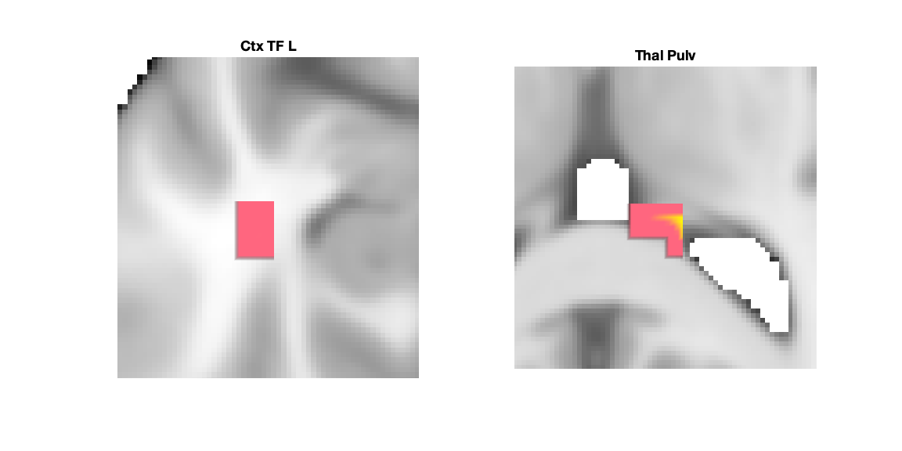

Contents
- Loading results and mask
- FDR-corrected results
- Path a results table, FDR-corrected
- Path b results table, FDR-corrected
- Path ab results table, FDR-corrected
- Combined montage plot with slices, FDR-corrected
- Uncorrected results
- Path a results table, uncorrected
- Path b results table, uncorrected
- Path ab results table, uncorrected
- Montage plot with slices, uncorrected
- Savefile information for objects with extracted data
Loading results and mask
----------------------------------------------------------------
----------------------------------------------
LOADING mediation results and images
----------------------------------------------
Calculating FDR threshold across family of tests in these images:
X-M_pvals.img
M-Y_pvals.img
X-M-Y_pvals.img
Direct calls to spm_defauts are deprecated.
Please use spm('Defaults',modality) or spm_get_defaults instead.
Total p-values: 530172
FDR threshold is 0.000021
Saving in SETUP.fdr_p_thresh
Using mask.img stored in current directory (automatically written for mediation analyses) for mask.
----------------------------------------------
Loaded mediation:
----------------------------------------------
mask: '/dartfs-hpc/rc/lab/C/CANlab/modules/CanlabCore/CanlabCore/canlab_canonical_brains/Canonical_brains_surfaces/gray_matter_mask.nii'
preprocX: 0
preprocY: 0
preprocM: 0
wh_is_mediator: 'M'
cmdstring: 'Search for mediators'
TR: NaN
HPlength: []
dummyscans: [1 2]
preproc_any: 0
names: {'X' 'Y' 'M'}
outputnames: {1×25 cell}
preprochandle: []
fhandle: @(M)mediation_brain_multilev_wrapper(X,Y,M,varargin{:})
data: [1×1 struct]
inputOptions: {'nopreproc'}
fdr_p_thresh: 2.1254e-05
----------------------------------------------
Mask for analysis:
----------------------------------------------
Grouping contiguous voxels: 9 regions
sagittal montage: 4165 voxels displayed, 77215 not displayed on these slices
axial montage: 22284 voxels displayed, 59096 not displayed on these slices
 FDR-corrected results
----------------------------------------------------------------
---------------------------------------------- FDR-corrected results ---------------------------------------------- Results corrected across set of a, b, ab images using mediation_brain_corrected_threshold FDR q < .05 = p < 0.00002125
Path a results table, FDR-corrected
----------------------------------------------
Path a, FDR-corrected q < .05
----------------------------------------------
Image 1
9 contig. clusters, sizes 3 to 104
Positive effect: 110 voxels, min p-value: 0.00000006
Negative effect: 104 voxels, min p-value: 0.00000003
____________________________________________________________________________________________________________________________________________
Positive Effects
Region Volume XYZ maxZ modal_label_descriptions Perc_covered_by_label Atlas_regions_covered region_index
______________ ______ ___________________ _______ ____________________________ _____________________ _____________________ ____________
{'Ctx_PHA1_L'} 336 -27 -41 -11 0.60093 {'Cortex_Default_ModeC' } 40 0 3
{'Ctx_MIP_R' } 560 24 -71 51 0.68404 {'Cortex_Dorsal_AttentionA'} 27 0 7
{'Ctx_6a_R' } 1616 27 -4 54 0.56236 {'Cortex_Dorsal_AttentionB'} 74 1 8
{'Ctx_AIP_R' } 432 40 -39 48 0.54591 {'Cortex_Fronto_ParietalA' } 43 0 6
{'Ctx_VVC_L' } 1528 -35 -63 -14 0.72194 {'Cortex_Visual_Central' } 34 1 1
{'Ctx_V4_R' } 1816 32 -79 -11 0.76951 {'Cortex_Visual_Central' } 36 1 2
{'Ctx_V2_L' } 544 -11 -100 5 0.75644 {'Cortex_Visual_Peripheral'} 47 0 4
{'Ctx_V1_R' } 448 16 -98 11 0.78882 {'Cortex_Visual_Peripheral'} 21 0 5
Negative Effects
Region Volume XYZ maxZ modal_label_descriptions Perc_covered_by_label Atlas_regions_covered region_index
____________ ______ ________________ _______ ____________________________ _____________________ _____________________ ____________
{'Ctx_V1_L'} 4200 -8 -87 -8 -1.8616 {'Cortex_Visual_Peripheral'} 38 0 9
____________________________________________________________________________________________________________________________________________
Regions labeled by reference atlas CANlab_2018_combined
Volume: Volume of contiguous region in cubic mm.
MaxZ: Signed max over p
Atlas_regions_covered: Number of reference atlas regions covered at least 25% by the region. This relates to whether the region covers
multiple reference atlas regions
Region: Best reference atlas label, defined as reference region with highest number of in-region voxels. Regions covering >25% of >5
regions labeled as "Multiple regions"
Perc_covered_by_label: Percentage of the region covered by the label.
Ref_region_perc: Percentage of the label region within the target region.
modal_atlas_index: Index number of label region in reference atlas
all_regions_covered: All regions covered >5% in descending order of importance
For example, if a region is labeled 'TE1a' and Perc_covered_by_label = 8, Ref_region_perc = 38, and Atlas_regions_covered = 17, this means
that 8% of the region's voxels are labeled TE1a, which is the highest percentage among reference label regions. 38% of the region TE1a is
covered by the region. However, the region covers at least 25% of 17 distinct labeled reference regions.
References for atlases:
Beliveau, Vincent, Claus Svarer, Vibe G. Frokjaer, Gitte M. Knudsen, Douglas N. Greve, and Patrick M. Fisher. 2015. “Functional
Connectivity of the Dorsal and Median Raphe Nuclei at Rest.” NeuroImage 116 (August): 187–95.
Bär, Karl-Jürgen, Feliberto de la Cruz, Andy Schumann, Stefanie Koehler, Heinrich Sauer, Hugo Critchley, and Gerd Wagner. 2016. ?Functional
Connectivity and Network Analysis of Midbrain and Brainstem Nuclei.? NeuroImage 134 (July):53?63.
Diedrichsen, Jörn, Joshua H. Balsters, Jonathan Flavell, Emma Cussans, and Narender Ramnani. 2009. A Probabilistic MR Atlas of the Human
Cerebellum. NeuroImage 46 (1): 39?46.
Fairhurst, Merle, Katja Wiech, Paul Dunckley, and Irene Tracey. 2007. ?Anticipatory Brainstem Activity Predicts Neural Processing of Pain
in Humans.? Pain 128 (1-2):101?10.
Fan 2016 Cerebral Cortex; doi:10.1093/cercor/bhw157
Glasser, Matthew F., Timothy S. Coalson, Emma C. Robinson, Carl D. Hacker, John Harwell, Essa Yacoub, Kamil Ugurbil, et al. 2016. A
Multi-Modal Parcellation of Human Cerebral Cortex. Nature 536 (7615): 171?78.
Keren, Noam I., Carl T. Lozar, Kelly C. Harris, Paul S. Morgan, and Mark A. Eckert. 2009. “In Vivo Mapping of the Human Locus Coeruleus.”
NeuroImage 47 (4): 1261–67.
Keuken, M. C., P-L Bazin, L. Crown, J. Hootsmans, A. Laufer, C. Müller-Axt, R. Sier, et al. 2014. “Quantifying Inter-Individual Anatomical
Variability in the Subcortex Using 7 T Structural MRI.” NeuroImage 94 (July): 40–46.
Krauth A, Blanc R, Poveda A, Jeanmonod D, Morel A, Székely G. (2010) A mean three-dimensional atlas of the human thalamus: generation from
multiple histological data. Neuroimage. 2010 Feb 1;49(3):2053-62. Jakab A, Blanc R, Berényi EL, Székely G. (2012) Generation of
Individualized Thalamus Target Maps by Using Statistical Shape Models and Thalamocortical Tractography. AJNR Am J Neuroradiol. 33:
2110-2116, doi: 10.3174/ajnr.A3140
Nash, Paul G., Vaughan G. Macefield, Iven J. Klineberg, Greg M. Murray, and Luke A. Henderson. 2009. ?Differential Activation of the Human
Trigeminal Nuclear Complex by Noxious and Non-Noxious Orofacial Stimulation.? Human Brain Mapping 30 (11):3772?82.
Pauli 2018 Bioarxiv: CIT168 from Human Connectome Project data
Pauli, Wolfgang M., Amanda N. Nili, and J. Michael Tyszka. 2018. ?A High-Resolution Probabilistic in Vivo Atlas of Human Subcortical Brain
Nuclei.? Scientific Data 5 (April): 180063.
Pauli, Wolfgang M., Randall C. O?Reilly, Tal Yarkoni, and Tor D. Wager. 2016. ?Regional Specialization within the Human Striatum for
Diverse Psychological Functions.? Proceedings of the National Academy of Sciences of the United States of America 113 (7): 1907?12.
Sclocco, Roberta, Florian Beissner, Gaelle Desbordes, Jonathan R. Polimeni, Lawrence L. Wald, Norman W. Kettner, Jieun Kim, et al. 2016.
?Neuroimaging Brainstem Circuitry Supporting Cardiovagal Response to Pain: A Combined Heart Rate Variability/ultrahigh-Field (7 T)
Functional Magnetic Resonance Imaging Study.? Philosophical Transactions. Series A, Mathematical, Physical, and Engineering Sciences 374
(2067). rsta.royalsocietypublishing.org. https://doi.org/10.1098/rsta.2015.0189.
Shen, X., F. Tokoglu, X. Papademetris, and R. T. Constable. 2013. “Groupwise Whole-Brain Parcellation from Resting-State fMRI Data for
Network Node Identification.” NeuroImage 82 (November): 403–15.
Zambreanu, L., R. G. Wise, J. C. W. Brooks, G. D. Iannetti, and I. Tracey. 2005. ?A Role for the Brainstem in Central Sensitisation in
Humans. Evidence from Functional Magnetic Resonance Imaging.? Pain 114 (3):397?407.
Note: Region object r(i).title contains full list of reference atlas regions covered by each cluster.
____________________________________________________________________________________________________________________________________________
 Path b results table, FDR-corrected
---------------------------------------------- Path b, FDR-corrected q < .05 ---------------------------------------------- Image 1 0 contig. clusters, sizes to Positive effect: 0 voxels, min p-value: 0.00196199 Negative effect: 0 voxels, min p-value: 0.00996090 Grouping contiguous voxels: 0 regions ____________________________________________________________________________________________________________________________________________ Positive Effects No regions to display Negative Effects No regions to display ____________________________________________________________________________________________________________________________________________
Path ab results table, FDR-corrected
---------------------------------------------- Path ab, FDR-corrected q < .05 ---------------------------------------------- Image 1 0 contig. clusters, sizes to Positive effect: 0 voxels, min p-value: 0.00385106 Negative effect: 0 voxels, min p-value: 0.04601232 Grouping contiguous voxels: 0 regions ____________________________________________________________________________________________________________________________________________ Positive Effects No regions to display Negative Effects No regions to display ____________________________________________________________________________________________________________________________________________
Combined montage plot with slices, FDR-corrected
Grouping contiguous voxels: 9 regions sagittal montage: 2 voxels displayed, 212 not displayed on these slices axial montage: 73 voxels displayed, 141 not displayed on these slices Grouping contiguous voxels: 0 regions Grouping contiguous voxels: 0 regions
Uncorrected results
----------------------------------------------------------------
---------------------------------------------- Uncorrected (p < .01) results ----------------------------------------------
Path a results table, uncorrected
----------------------------------------------
Path a, Uncorrected (p < .01)
----------------------------------------------
Image 1
58 contig. clusters, sizes 3 to 2249
Positive effect: 5482 voxels, min p-value: 0.00000006
Negative effect: 524 voxels, min p-value: 0.00000003
Grouping contiguous voxels: 58 regions
____________________________________________________________________________________________________________________________________________
Positive Effects
Region Volume XYZ maxZ modal_label_descriptions Perc_covered_by_label Atlas_regions_covered region_index
____________________ ______ ___________________ _______ _____________________________ _____________________ _____________________ ____________
{'Putamen_Pp_L' } 576 -29 -14 -3 0.42258 {'Basal_ganglia' } 92 0 24
{'Putamen_Pp_L' } 528 -32 2 0 0.34565 {'Basal_ganglia' } 42 0 25
{'Putamen_Pp_L' } 760 -27 -4 8 0.47998 {'Basal_ganglia' } 52 0 29
{'Putamen_Pp_R' } 288 30 -1 5 0.36761 {'Basal_ganglia' } 58 0 30
{'Cau_L' } 288 -24 15 5 0.24777 {'Basal_ganglia' } 33 0 31
{'Bstem_Med_L' } 848 -3 -41 -54 0.54759 {'Brainstem' } 58 1 2
{'Bstem_Midbrv_R' } 3008 22 -14 -16 0.75277 {'Brainstem' } 24 2 13
{'Cblm_IX_R' } 1840 11 -49 -51 0.55174 {'Cerebellum' } 85 0 1
{'Cblm_VIIIb_L' } 768 -13 -60 -51 0.48362 {'Cerebellum' } 76 0 3
{'Cblm_VIIb_R' } 1672 16 -73 -46 0.31761 {'Cerebellum' } 55 0 4
{'Cblm_CrusII_L' } 2352 -11 -73 -41 0.34249 {'Cerebellum' } 59 0 5
{'Cblm_X_L' } 688 -19 -41 -43 0.47009 {'Cerebellum' } 71 0 6
{'Cblm_V_L' } 240 -21 -39 -35 0.29985 {'Cerebellum' } 63 0 7
{'Cblm_CrusI_R' } 904 32 -73 -30 0.31661 {'Cerebellum' } 100 0 8
{'Multiple regions'} 25816 -32 -55 -14 0.75151 {'Cerebellum' } 10 17 9
{'Cblm_VI_R' } 904 11 -73 -24 0.32751 {'Cerebellum' } 43 0 10
{'Cblm_VI_L' } 528 -11 -63 -16 0.30966 {'Cerebellum' } 95 0 15
{'Cblm_V_L' } 552 3 -57 -11 0.3343 {'Cerebellum' } 35 0 17
{'Cblm_V_L' } 528 -5 -49 -11 0.30696 {'Cerebellum' } 56 0 19
{'Ctx_s32_R' } 1656 3 31 -14 0.56655 {'Cortex_Default_ModeA' } 32 2 16
{'Ctx_10r_L' } 1360 -11 47 -8 0.49091 {'Cortex_Default_ModeA' } 34 0 18
{'Ctx_10r_L' } 592 0 53 -8 0.67144 {'Cortex_Default_ModeA' } 39 0 20
{'Ctx_v23ab_L' } 360 -8 -49 19 0.36043 {'Cortex_Default_ModeA' } 33 0 38
{'Ctx_31pv_L' } 256 -11 -33 32 0.19654 {'Cortex_Default_ModeA' } 3 0 44
{'Ctx_H_L' } 7184 -24 -14 -16 0.8805 {'Cortex_Default_ModeC' } 15 5 12
{'Ctx_POS1_L' } 672 -19 -57 16 0.41767 {'Cortex_Default_ModeC' } 57 0 34
{'Ctx_POS1_R' } 3944 16 -55 19 0.53597 {'Cortex_Default_ModeC' } 30 3 36
{'Ctx_TPOJ2_L' } 528 -51 -60 16 0.35218 {'Cortex_Dorsal_AttentionA' } 70 0 37
{'Multiple regions'} 79792 32 -71 21 0.87895 {'Cortex_Dorsal_AttentionB' } 3 36 11
{'Ctx_2_L' } 648 -62 -20 38 0.34965 {'Cortex_Dorsal_AttentionB' } 27 0 45
{'Ctx_6a_L' } 5152 -24 2 54 0.38997 {'Cortex_Dorsal_AttentionB' } 33 1 47
{'Ctx_6a_R' } 12160 30 -1 57 0.56236 {'Cortex_Dorsal_AttentionB' } 22 4 49
{'Ctx_5L_R' } 704 14 -41 65 0.22872 {'Cortex_Dorsal_AttentionB' } 45 0 55
{'Multiple regions'} 40544 -29 -63 43 0.71127 {'Cortex_Fronto_ParietalA' } 5 19 27
{'Ctx_IFSp_L' } 688 -43 20 24 0.36123 {'Cortex_Fronto_ParietalA' } 69 1 41
{'Ctx_p9_46v_R' } 480 32 31 21 0.16297 {'Cortex_Fronto_ParietalA' } 2 0 42
{'Ctx_11l_R' } 432 27 34 -22 0.44048 {'Cortex_Fronto_ParietalB' } 39 0 14
{'Ctx_p10p_R' } 360 27 50 8 0.21585 {'Cortex_Fronto_ParietalB' } 24 0 32
{'Ctx_1_L' } 432 -62 -20 46 0.37395 {'Cortex_SomatomotorA' } 69 0 48
{'Ctx_4_L' } 320 -43 -14 57 0.39855 {'Cortex_SomatomotorA' } 47 0 52
{'Ctx_4_R' } 504 24 -20 59 0.22268 {'Cortex_SomatomotorA' } 27 0 54
{'Ctx_5m_R' } 360 3 -33 65 0.2385 {'Cortex_SomatomotorA' } 69 0 56
{'Ctx_4_L' } 680 -13 -28 73 0.21052 {'Cortex_SomatomotorA' } 54 0 57
{'Ctx_OP1_L' } 2760 -43 -28 21 0.47038 {'Cortex_SomatomotorB' } 37 2 39
{'Ctx_6v_L' } 3952 -54 4 32 0.55801 {'Cortex_SomatomotorB' } 30 2 40
{'Ctx_6v_R' } 3856 54 7 32 0.53777 {'Cortex_SomatomotorB' } 47 2 43
{'Ctx_A5_L' } 432 -62 -4 -6 0.33337 {'Cortex_Temporal_Parietal' } 94 0 22
{'Ctx_A5_L' } 616 -56 -22 0 0.30134 {'Cortex_Temporal_Parietal' } 27 0 26
{'Ctx_STV_L' } 1688 -64 -41 16 0.43519 {'Cortex_Temporal_Parietal' } 54 1 33
{'Ctx_TPOJ1_L' } 528 -43 -52 11 0.21222 {'Cortex_Temporal_Parietal' } 26 0 35
{'Ctx_55b_R' } 600 43 4 43 0.2625 {'Cortex_Ventral_AttentionA'} 64 0 46
{'Ctx_5mv_R' } 224 14 -28 51 0.18052 {'Cortex_Ventral_AttentionA'} 18 0 50
{'Ctx_SCEF_L' } 400 -11 -4 54 0.2765 {'Cortex_Ventral_AttentionA'} 20 0 51
{'Ctx_SCEF_R' } 224 11 -6 59 0.2412 {'Cortex_Ventral_AttentionA'} 36 0 53
{'Ctx_V1_L' } 4328 -13 -100 5 0.75644 {'Cortex_Visual_Peripheral' } 28 0 21
{'Ctx_ProS_L' } 352 -16 -47 3 0.32213 {'Cortex_Visual_Peripheral' } 43 0 28
{'Thal_Pulv' } 1544 22 -36 3 0.37511 {'Diencephalon' } 31 0 23
Negative Effects
Region Volume XYZ maxZ modal_label_descriptions Perc_covered_by_label Atlas_regions_covered region_index
____________ ______ ________________ _______ ____________________________ _____________________ _____________________ ____________
{'Ctx_V1_L'} 17856 -8 -87 -6 -1.8616 {'Cortex_Visual_Peripheral'} 30 2 58
____________________________________________________________________________________________________________________________________________
Regions labeled by reference atlas CANlab_2018_combined
Volume: Volume of contiguous region in cubic mm.
MaxZ: Signed max over p
Atlas_regions_covered: Number of reference atlas regions covered at least 25% by the region. This relates to whether the region covers
multiple reference atlas regions
Region: Best reference atlas label, defined as reference region with highest number of in-region voxels. Regions covering >25% of >5
regions labeled as "Multiple regions"
Perc_covered_by_label: Percentage of the region covered by the label.
Ref_region_perc: Percentage of the label region within the target region.
modal_atlas_index: Index number of label region in reference atlas
all_regions_covered: All regions covered >5% in descending order of importance
For example, if a region is labeled 'TE1a' and Perc_covered_by_label = 8, Ref_region_perc = 38, and Atlas_regions_covered = 17, this means
that 8% of the region's voxels are labeled TE1a, which is the highest percentage among reference label regions. 38% of the region TE1a is
covered by the region. However, the region covers at least 25% of 17 distinct labeled reference regions.
References for atlases:
Beliveau, Vincent, Claus Svarer, Vibe G. Frokjaer, Gitte M. Knudsen, Douglas N. Greve, and Patrick M. Fisher. 2015. “Functional
Connectivity of the Dorsal and Median Raphe Nuclei at Rest.” NeuroImage 116 (August): 187–95.
Bär, Karl-Jürgen, Feliberto de la Cruz, Andy Schumann, Stefanie Koehler, Heinrich Sauer, Hugo Critchley, and Gerd Wagner. 2016. ?Functional
Connectivity and Network Analysis of Midbrain and Brainstem Nuclei.? NeuroImage 134 (July):53?63.
Diedrichsen, Jörn, Joshua H. Balsters, Jonathan Flavell, Emma Cussans, and Narender Ramnani. 2009. A Probabilistic MR Atlas of the Human
Cerebellum. NeuroImage 46 (1): 39?46.
Fairhurst, Merle, Katja Wiech, Paul Dunckley, and Irene Tracey. 2007. ?Anticipatory Brainstem Activity Predicts Neural Processing of Pain
in Humans.? Pain 128 (1-2):101?10.
Fan 2016 Cerebral Cortex; doi:10.1093/cercor/bhw157
Glasser, Matthew F., Timothy S. Coalson, Emma C. Robinson, Carl D. Hacker, John Harwell, Essa Yacoub, Kamil Ugurbil, et al. 2016. A
Multi-Modal Parcellation of Human Cerebral Cortex. Nature 536 (7615): 171?78.
Keren, Noam I., Carl T. Lozar, Kelly C. Harris, Paul S. Morgan, and Mark A. Eckert. 2009. “In Vivo Mapping of the Human Locus Coeruleus.”
NeuroImage 47 (4): 1261–67.
Keuken, M. C., P-L Bazin, L. Crown, J. Hootsmans, A. Laufer, C. Müller-Axt, R. Sier, et al. 2014. “Quantifying Inter-Individual Anatomical
Variability in the Subcortex Using 7 T Structural MRI.” NeuroImage 94 (July): 40–46.
Krauth A, Blanc R, Poveda A, Jeanmonod D, Morel A, Székely G. (2010) A mean three-dimensional atlas of the human thalamus: generation from
multiple histological data. Neuroimage. 2010 Feb 1;49(3):2053-62. Jakab A, Blanc R, Berényi EL, Székely G. (2012) Generation of
Individualized Thalamus Target Maps by Using Statistical Shape Models and Thalamocortical Tractography. AJNR Am J Neuroradiol. 33:
2110-2116, doi: 10.3174/ajnr.A3140
Nash, Paul G., Vaughan G. Macefield, Iven J. Klineberg, Greg M. Murray, and Luke A. Henderson. 2009. ?Differential Activation of the Human
Trigeminal Nuclear Complex by Noxious and Non-Noxious Orofacial Stimulation.? Human Brain Mapping 30 (11):3772?82.
Pauli 2018 Bioarxiv: CIT168 from Human Connectome Project data
Pauli, Wolfgang M., Amanda N. Nili, and J. Michael Tyszka. 2018. ?A High-Resolution Probabilistic in Vivo Atlas of Human Subcortical Brain
Nuclei.? Scientific Data 5 (April): 180063.
Pauli, Wolfgang M., Randall C. O?Reilly, Tal Yarkoni, and Tor D. Wager. 2016. ?Regional Specialization within the Human Striatum for
Diverse Psychological Functions.? Proceedings of the National Academy of Sciences of the United States of America 113 (7): 1907?12.
Sclocco, Roberta, Florian Beissner, Gaelle Desbordes, Jonathan R. Polimeni, Lawrence L. Wald, Norman W. Kettner, Jieun Kim, et al. 2016.
?Neuroimaging Brainstem Circuitry Supporting Cardiovagal Response to Pain: A Combined Heart Rate Variability/ultrahigh-Field (7 T)
Functional Magnetic Resonance Imaging Study.? Philosophical Transactions. Series A, Mathematical, Physical, and Engineering Sciences 374
(2067). rsta.royalsocietypublishing.org. https://doi.org/10.1098/rsta.2015.0189.
Shen, X., F. Tokoglu, X. Papademetris, and R. T. Constable. 2013. “Groupwise Whole-Brain Parcellation from Resting-State fMRI Data for
Network Node Identification.” NeuroImage 82 (November): 403–15.
Zambreanu, L., R. G. Wise, J. C. W. Brooks, G. D. Iannetti, and I. Tracey. 2005. ?A Role for the Brainstem in Central Sensitisation in
Humans. Evidence from Functional Magnetic Resonance Imaging.? Pain 114 (3):397?407.
Note: Region object r(i).title contains full list of reference atlas regions covered by each cluster.
____________________________________________________________________________________________________________________________________________
 Path b results table, uncorrected
----------------------------------------------
Path b, Uncorrected (p < .01)
----------------------------------------------
Image 1
2 contig. clusters, sizes 5 to 5
Positive effect: 10 voxels, min p-value: 0.00196199
Negative effect: 0 voxels, min p-value: 0.00996090
Grouping contiguous voxels: 2 regions
____________________________________________________________________________________________________________________________________________
Positive Effects
Region Volume XYZ maxZ modal_label_descriptions Perc_covered_by_label Atlas_regions_covered region_index
_____________ ______ _________________ _______ ________________________ _____________________ _____________________ ____________
{'Ctx_TF_L' } 440 -43 -12 -19 0.47536 {'Cortex_Limbic'} 5 0 1
{'Thal_Pulv'} 320 11 -31 13 0.34608 {'Diencephalon' } 17 0 2
Negative Effects
No regions to display
____________________________________________________________________________________________________________________________________________
Regions labeled by reference atlas CANlab_2018_combined
Volume: Volume of contiguous region in cubic mm.
MaxZ: Signed max over p
Atlas_regions_covered: Number of reference atlas regions covered at least 25% by the region. This relates to whether the region covers
multiple reference atlas regions
Region: Best reference atlas label, defined as reference region with highest number of in-region voxels. Regions covering >25% of >5
regions labeled as "Multiple regions"
Perc_covered_by_label: Percentage of the region covered by the label.
Ref_region_perc: Percentage of the label region within the target region.
modal_atlas_index: Index number of label region in reference atlas
all_regions_covered: All regions covered >5% in descending order of importance
For example, if a region is labeled 'TE1a' and Perc_covered_by_label = 8, Ref_region_perc = 38, and Atlas_regions_covered = 17, this means
that 8% of the region's voxels are labeled TE1a, which is the highest percentage among reference label regions. 38% of the region TE1a is
covered by the region. However, the region covers at least 25% of 17 distinct labeled reference regions.
References for atlases:
Beliveau, Vincent, Claus Svarer, Vibe G. Frokjaer, Gitte M. Knudsen, Douglas N. Greve, and Patrick M. Fisher. 2015. “Functional
Connectivity of the Dorsal and Median Raphe Nuclei at Rest.” NeuroImage 116 (August): 187–95.
Bär, Karl-Jürgen, Feliberto de la Cruz, Andy Schumann, Stefanie Koehler, Heinrich Sauer, Hugo Critchley, and Gerd Wagner. 2016. ?Functional
Connectivity and Network Analysis of Midbrain and Brainstem Nuclei.? NeuroImage 134 (July):53?63.
Diedrichsen, Jörn, Joshua H. Balsters, Jonathan Flavell, Emma Cussans, and Narender Ramnani. 2009. A Probabilistic MR Atlas of the Human
Cerebellum. NeuroImage 46 (1): 39?46.
Fairhurst, Merle, Katja Wiech, Paul Dunckley, and Irene Tracey. 2007. ?Anticipatory Brainstem Activity Predicts Neural Processing of Pain
in Humans.? Pain 128 (1-2):101?10.
Fan 2016 Cerebral Cortex; doi:10.1093/cercor/bhw157
Glasser, Matthew F., Timothy S. Coalson, Emma C. Robinson, Carl D. Hacker, John Harwell, Essa Yacoub, Kamil Ugurbil, et al. 2016. A
Multi-Modal Parcellation of Human Cerebral Cortex. Nature 536 (7615): 171?78.
Keren, Noam I., Carl T. Lozar, Kelly C. Harris, Paul S. Morgan, and Mark A. Eckert. 2009. “In Vivo Mapping of the Human Locus Coeruleus.”
NeuroImage 47 (4): 1261–67.
Keuken, M. C., P-L Bazin, L. Crown, J. Hootsmans, A. Laufer, C. Müller-Axt, R. Sier, et al. 2014. “Quantifying Inter-Individual Anatomical
Variability in the Subcortex Using 7 T Structural MRI.” NeuroImage 94 (July): 40–46.
Krauth A, Blanc R, Poveda A, Jeanmonod D, Morel A, Székely G. (2010) A mean three-dimensional atlas of the human thalamus: generation from
multiple histological data. Neuroimage. 2010 Feb 1;49(3):2053-62. Jakab A, Blanc R, Berényi EL, Székely G. (2012) Generation of
Individualized Thalamus Target Maps by Using Statistical Shape Models and Thalamocortical Tractography. AJNR Am J Neuroradiol. 33:
2110-2116, doi: 10.3174/ajnr.A3140
Nash, Paul G., Vaughan G. Macefield, Iven J. Klineberg, Greg M. Murray, and Luke A. Henderson. 2009. ?Differential Activation of the Human
Trigeminal Nuclear Complex by Noxious and Non-Noxious Orofacial Stimulation.? Human Brain Mapping 30 (11):3772?82.
Pauli 2018 Bioarxiv: CIT168 from Human Connectome Project data
Pauli, Wolfgang M., Amanda N. Nili, and J. Michael Tyszka. 2018. ?A High-Resolution Probabilistic in Vivo Atlas of Human Subcortical Brain
Nuclei.? Scientific Data 5 (April): 180063.
Pauli, Wolfgang M., Randall C. O?Reilly, Tal Yarkoni, and Tor D. Wager. 2016. ?Regional Specialization within the Human Striatum for
Diverse Psychological Functions.? Proceedings of the National Academy of Sciences of the United States of America 113 (7): 1907?12.
Sclocco, Roberta, Florian Beissner, Gaelle Desbordes, Jonathan R. Polimeni, Lawrence L. Wald, Norman W. Kettner, Jieun Kim, et al. 2016.
?Neuroimaging Brainstem Circuitry Supporting Cardiovagal Response to Pain: A Combined Heart Rate Variability/ultrahigh-Field (7 T)
Functional Magnetic Resonance Imaging Study.? Philosophical Transactions. Series A, Mathematical, Physical, and Engineering Sciences 374
(2067). rsta.royalsocietypublishing.org. https://doi.org/10.1098/rsta.2015.0189.
Shen, X., F. Tokoglu, X. Papademetris, and R. T. Constable. 2013. “Groupwise Whole-Brain Parcellation from Resting-State fMRI Data for
Network Node Identification.” NeuroImage 82 (November): 403–15.
Zambreanu, L., R. G. Wise, J. C. W. Brooks, G. D. Iannetti, and I. Tracey. 2005. ?A Role for the Brainstem in Central Sensitisation in
Humans. Evidence from Functional Magnetic Resonance Imaging.? Pain 114 (3):397?407.
Note: Region object r(i).title contains full list of reference atlas regions covered by each cluster.
____________________________________________________________________________________________________________________________________________
 Path ab results table, uncorrected
---------------------------------------------- Path ab, Uncorrected (p < .01) ---------------------------------------------- Image 1 0 contig. clusters, sizes to Positive effect: 0 voxels, min p-value: 0.00385106 Negative effect: 0 voxels, min p-value: 0.04601232 Grouping contiguous voxels: 0 regions ____________________________________________________________________________________________________________________________________________ Positive Effects No regions to display Negative Effects No regions to display ____________________________________________________________________________________________________________________________________________
Index in position 1 exceeds array bounds.
Error in canlab_results_fmridisplay (line 343)
[o2, dat] = montage(o2, orientation, 'wh_slice', xyz(i, :), 'onerow', 'existing_axes', axh(i), 'existing_figure', 'noverbose');
Error in region/montage (line 226)
o2 = canlab_results_fmridisplay(obj, 'noverbose', varargin{:}, 'noblobs', 'nooutline');
Error in mediation_brain_results_report (line 189)
montage(ab_regions_01unc, 'colormap', 'regioncenters');